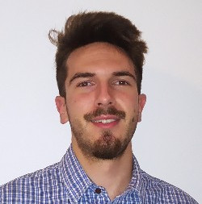

I am an Aeronautical Engineer from Politecnico
di Milano and a PhD student in Mathematics at
Gran Sasso Science Institute. My studies are focused on
Fluid Dynamics and CFD/numerical
methods. I have experience in both Finite
Volume and Finite Element simulations and
programming in C++ and Python. During my
Master’s Thesis, I had the opportunity to discover and explore the field
of CFD for cardiovascular applications within the lifex project (see Education section). Beyond my academic career, I
gained practical CFD knowledge as a member of the student association Polimi Motorcycle
Factory (PMF, see Experience section). My enthusiasm for
scientific computing, programming, and Linux/open
source extends across both academic and personal projects, several
of which are featured on my GitHub page.
Language skills: English - C1 (TOEIC
certificate: score 975/990), Italian - native speaker.
C++17, relying on deal.ii finite element
library, and has been carried out within the lifex project.C++ for scientific computing),
Model Order Reduction Techniques (i.e. a branch of Machine
Learning), Airplane Performance, Aeroelasticity.A list collecting the awards I received for my academic results is presented below.
The open-source contributions from my personal and academic projects are all uploaded on my GitHub page. The relevant contributions are presented below.
Python program to post-process
OpenFOAM simulations, collecting and analyzing data with
pyvista, numpy, pandas and
matplotlib.C++ parallel implementation of a matrix-free Laplace
equation solver for structured grids, relying on MPI
and OpenMP.C++ (up to
C++20), Python, Bash,
MATLAB.C++ Libraries & Parallelization:
lifex, deal.ii, MPI,
OpenMP.Python Libraries: numpy, pandas, pyvista, matplotlib, scipy, gmsh, fenics.Python projects with
pip.C++ software in Linux
environment.docker/podman containers.MPI clusters.git, GitHub, GitLab.C.lifex, OpenFOAM, SU2.ANSA, Gmsh.pyvista, ParaView (both GUI and
APIs).OpenFOAM,
Python, ANSA, ParaView,
MPI cluster admin.ANSA)
throughout the CFD simulation (using OpenFOAM) and the
post-processing (involving data analysis with ParaView,
numpy, pandas and matplotlib). I
also configured and administered the MPI cluster of PMF!